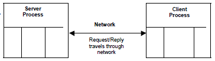
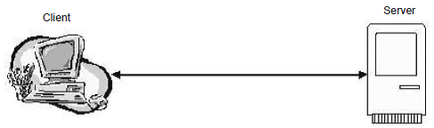
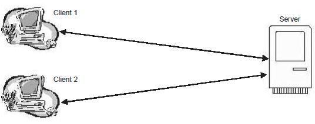

INTRODUCTION
Networks, like humans, exist even within computer systems!
To understand this, this module will run you through how computer networks are connected in sharing information and resources through servers and clients.
Since you have just learned about networks in the previous module, the computer server will be an example of a network that you will be working with in the workplace.
This lesson will run you through the client/server network model. You will be able to enumerate the various functions of the client/server model and as well as discuss their different topologies.
Client/Server, according to the Management Information System, is the new technology that yields solutions to many data management problems faced by modern organizations.
This is a model based on the distribution of functions between two types of independent and autonomous processes: Server and Client.
- In simple method definitions,
-
Client -
any process that requests specific services from the Server.
-
Server -
a process which provides requested services for the Client.

Basic Client/Server Model
Basically, the two processes reside on two or more independent computers on a network. The server gives services for more than one client.
The network is the medium in which the server and client connects.
A Client/Server Topology is the physical layout of the Client/Server network. It plots out how the clients and servers are connected to each other.
The following are the most common designs and strategies:
-
- Single client, single server
- One client is directly connected to one server in this setup.

-
- Multiple clients, single server
- Several clients are directly connected to one server.

-
- Multiple clients, multiple servers
- Several clients are connected to several servers.